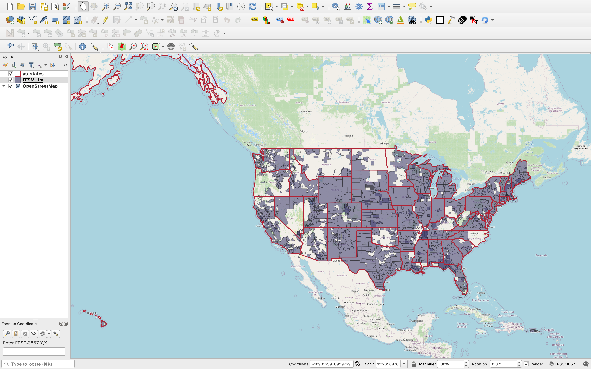

Name Name
QGIS UC 2024 Bratislava
bla appearing first
bla appearing second
bla appearing third
is less conventional than that of XYZ tiles
Let’s dive into tiling.
Area served: some US states
Data source: USGS
File processing on AWS Batch
Serve result to QGIS from s3
